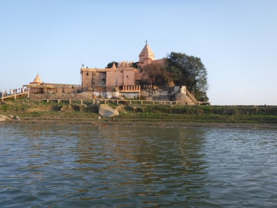

Bhagalpur is a city in the Indian state of Bihar, situated on the southern bank of the Ganga river. It is the 2nd largest city of Bihar by population and also serves the headquarters of Bhagalpur district, Bhagalpur division & Eastern Range. It's known as the Silk City & also listed for development under the Smart Cities Mission by Government of India. It is the only district in Bihar after capital city Patna where three major higher educational institutions IIIT, TMBU & Agriculture University(BAU) are located and also Vikramshila Central University is under construction next to the ruins of ancient Vikramshila University. The river around city is home to the Gangetic dolphin, the National Aquatic Animal of India, and the Vikramshila Gangetic Dolphin Sanctuary is established near the town. The city holds the largest Manasa Puja and one of the largest processions in Kali Puja, an intangible cultural heritage of the region.
Why is Bhagalpur famous for? Bhagalpur has been associated with the silk industry for hundreds of years, and famous all over India for its Tussar Silk & Bhagalpuri Saree. Silkworms are employed to produce the renowned Tussar Silk from which Tussar Saree is manufactured. The Silk Institute and Agricultural University are located in the city.
Click on any place in the list given below and explore more about the same
Mandar hill parvat These are beautiful places where you can feel the peace and serenity. These places has many intresting story which attaracts the people such as story about Mandar hill parvat is, this is the same parvat which was used in samundra manthan to obtain amrit and viss vikramshila vishwavidya is the one of the famous ancient university where people across the came and studied .These palces are really amazing. Please visit and explore more about the places.
Vikhramshila vishwavidyalya
Ajgaibinath mandir
Budhanath mandir